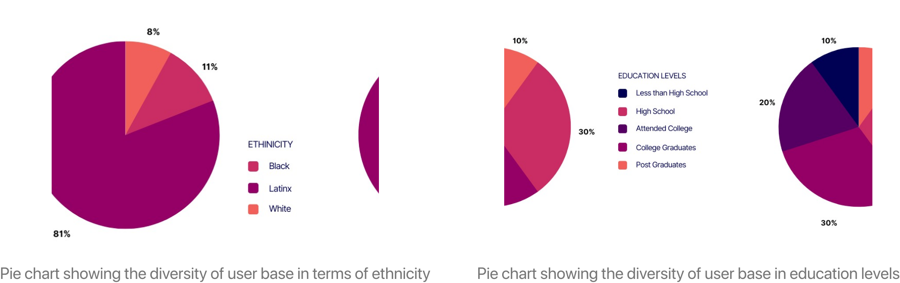
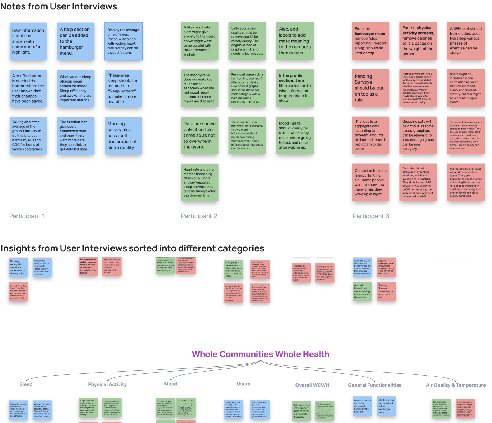
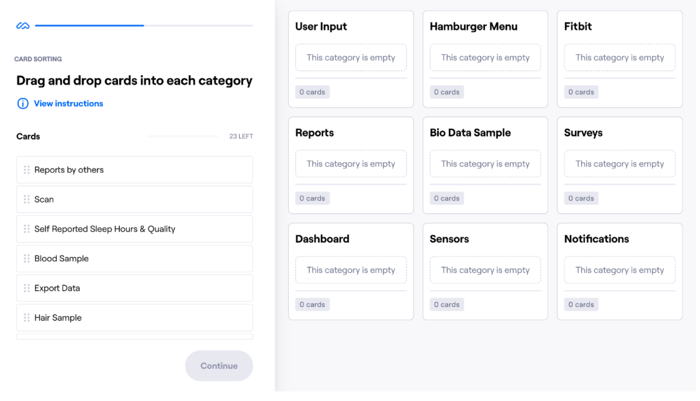
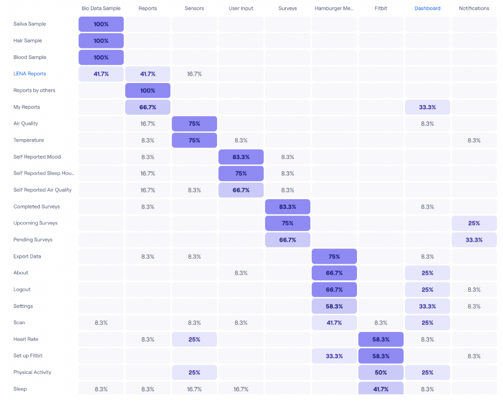
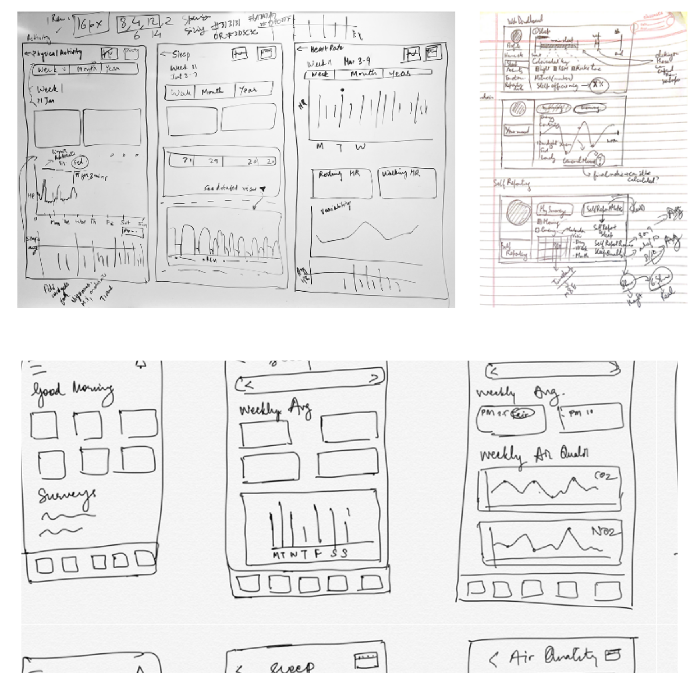
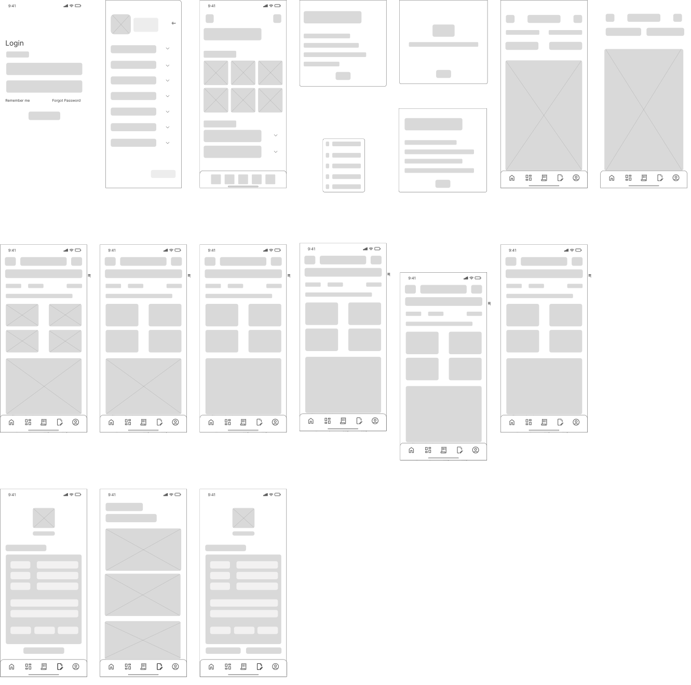
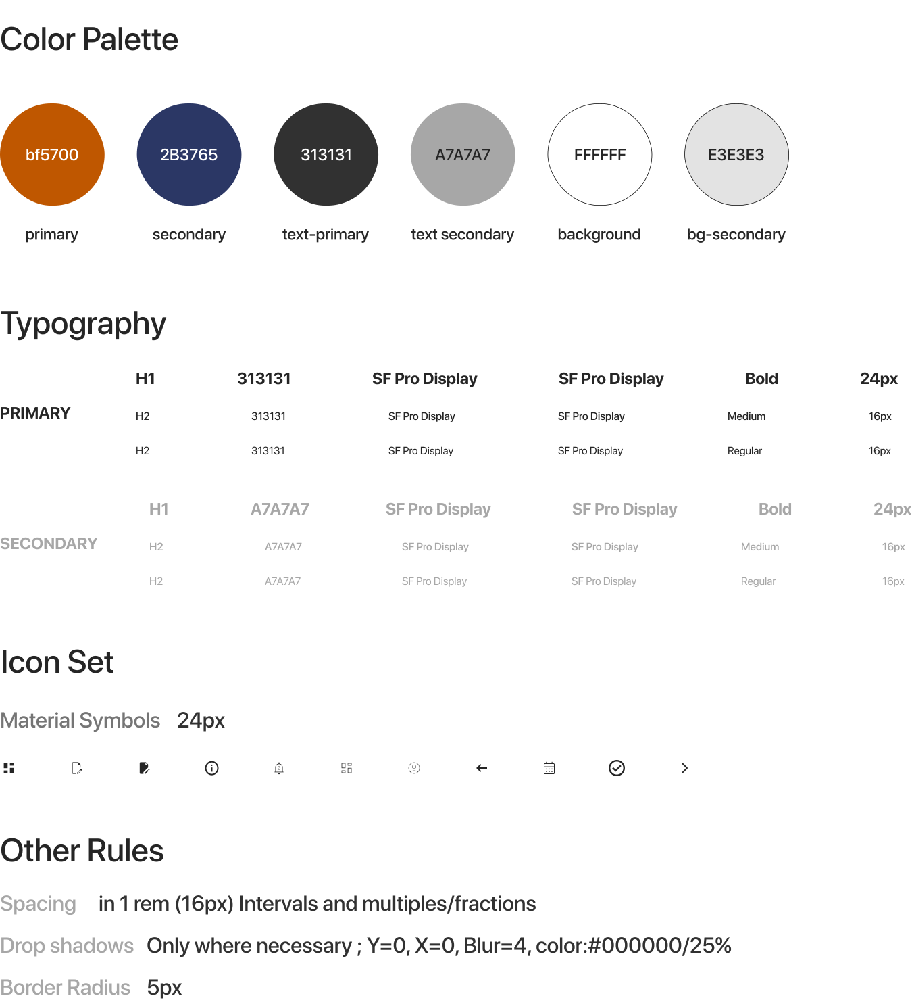
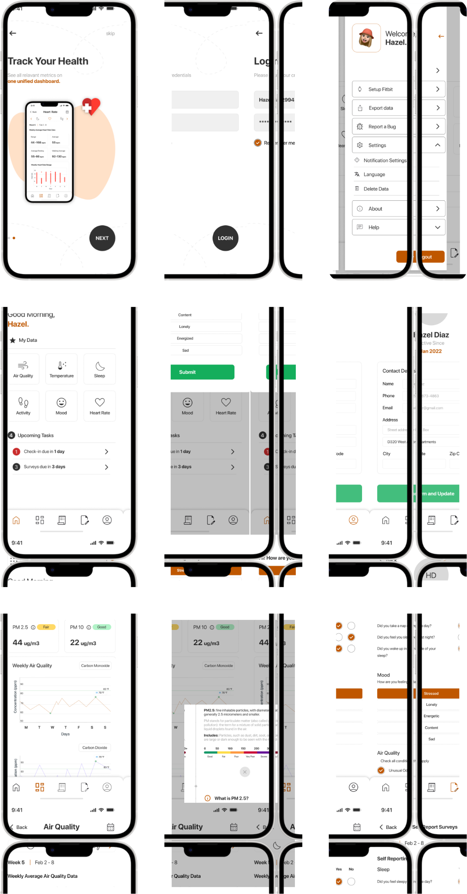

Loading, Please Wait...
Whole Communities Whole Health Project
Information Architecture and Design Project
Austin, TX, United States
Fall 2022
Team
Madhav Varma (Me) , Aayushi Saha, Ananya GM, Shatayu Mondhe (scroll down all the way for the team photo! :))
My Role
Lead Interviewer, UX/UI Designer and Visual Designer
Project Space
Technology and science don't benefit everyone equally. Health inequities are unacceptable in areas with fewer resources. Whole Communities Whole Health is designing a 5-year cohort study to better understand how physical and mental hardships, biology, and the environment impact the health of families dealing with systematic injustice.
Project Context
Families engaged in the research use the app Hornsense to understand the data that is summarized from their Fitbit bands and environmental sensors. They are given the information so they may decide on their health and living conditions with awareness. However, the app's structure is difficult to understand, and the data currently given on it lacks sufficient context.
Goals
Accessible Data Representation
by revamping the existing Hornsense app which is being used for returning the data back to the users.
To perform a competitor analysis
with the potential competitors of the WCWH Project and use the insights from those to improve the existing Hornsense App. We will also carry out a content inventory analysis.
To re-design the application
in a way that the data is understandable, accessible, and valuable for the users using the Hornsense application and help them live a better life.
Competitive Analysis
When we started to perform Competitor Analysis, we chose 6 competitors - 3 direct and 3 indirect. Direct competitors were those businesses that offered similar products or services to another company within the same market while indirect competitors were those that served the same customer needs as another company but offered different products or services.
Insights from Competitive Analysis
1. Has to be free
Since our app is a research-based initiative, it cannot be a paid service so even after scaling it up, marginalized communities can continue to have access to it.
2. Easily understandable graphs
Complex graphs can overwhelm the user and cause them to lose interest in using the application.
3. Less text, more visuals
Text-heavy content increases the cognitive load on the users and thus may distract them while using the application. Thus, to increase app engagement we have incorporated visually appealing and easily comprehensible content.
4. Easy discoverability of features
As observed from the analysis, the Information Architecture should support easy discoverability of features. Thus, we have designed our dashboard such that it is easy to navigate through the app home screen.
5. Avoiding panic
The health-related in-app notifications should not create panic, but should convey the information effectively.
Literature Review
We performed secondary research which was mostly us going through some research papers and compiling together the insights we could draw from the papers.

User Research
We were able to gather user research insights by taking help from our user representatives, Ben, Shirene and Sarah, who spoke to the end users on our behalf, based on a questionnaire we designed.
Needs
Wants to show individualized or grouped data
Needs help with translating the data for people with limited academic access
Wants help to find optimal solutions for the UX of the app
Wants a smooth and easy-to-see and interact with data on an app
Data Provided
MASQ (Mood and Anxiety Symptoms Questionnaire) findings for Mood Data Analysis
Fitbit data for Heart rate, Physical Activity, and Sleep analysis
Bevo Beacon data for Air and Temperature quality analysis
Study Objectives
Build trust within the communities that have a history of being
exploited in addition to collecting data
Diverse and Inclusive approach in the study
Expectations from our Team
- Design templates for graphs and other informatics tools
- Use our expertise in the design of the layout
- Help with developer handoff
- Make the app enjoyable and easy to use
- Suggest insights from data but avoid implications
Challenges
Restrictions
- IRB (Institutional Review Board) restrictions prevented us from speaking to the end users of our application directly. We could only do so through Ben and Shirene, the mediators
- Language Barrier: None of us speak Spanish, which acted as another barrier
Opportunities
We saw this as a great opportunity to work with marginalized communities, albeit indirectly, while sharpening our own skills as students of Information Architecture. It was also a redesign project, with strict constraints and limitations, which would further challenge us as designers.
Questionnaire
We compiled a list of the most important questions we asked our user representatives and based on their answers, we came up with a task list that we used during the user interviews we performed with our users.
- What pain points of the respondents did you address to motivate them to join the study?
- What are the problems with the current dashboard?
- Are there any issues with the user surveys that you have been taking through the app?
- Are there any users who have specific feedback about specific portions of the application?
- Can users stop recording their data as and when they want?
Demographics
Learnings
1. Most of our users are Latinx, while 11% are black and 8% are white hence fulfilling the purpose of the study to ensure proper representation of marginalized communities
2. Only 40% of our user groups were college graduates as for the rest of our users, they had limited access to academic assistance. So, we focused on designing a system that was easy to understand.
Approach
Research Design
- We conducted six moderated in-person and virtual user interviews with two moderators and two notetakers
- We designed five task scenarios to test how the users approached the various tasks
- We applied a think-aloud protocol to identify user’s thought processes and gather their feelings toward the application
Data Analysis
- We first compiled our moderator and notetaker notes into an excel sheet for each of the tests we conducted
- Created affinity maps based on the notes we took to visualize trends Data Collection
Data Collection
- Audio recording of the participant
- Moderator and notetaker notes
- Raw data provided by the WCWH team (Eg. REM_sleep_time, Non-REM_sleep_time, light_sleep_time, deep_sleep_time, vigorous_physical_activity_time, etc.)
Task Scenarios
- Look for specific health data
- Submit a survey
- Report Air Quality data
- Report a lost device
- Connect to somebody from the team
User Representatives
Since we did not have IRB clearances and were faced with language barriers to talking to the end users directly, we worked closely with ‘User Representatives’, who would communicate with the end users on our behalf. The WCWH team members we worked with for this project were:
Benjamin Baird
Research scientist, at The University of Texas at Austin
Expert in cognitive psychology, neuroscience, data science, and statistical analysis. His research spans several interrelated areas in human cognition. He is passionate about pioneering with data (big data, experimental & observational data). He strongly advocates for animal welfare, and international, environmental, and sustainability issues.
Shirene Garcia
Senior Outreach Program Coordinator, School of Social Work.
She uses her strong background in social work to lead the outreach side of the WCWH project. She works closely with Ben for data collection and analysis. She also uses her interpersonal skills to great effect when it comes to actually engaging with the people participating in the cohort study in person.
Sarah Smith
Research Study Coordinator, Office of the Vice President for Research, Scholarship, and Creative Endeavors
Sarah is responsible for managing the software and data side of this project. She works closely with the technology and development team. She was instrumental in informing us which features are feasible and which are not. In the future, she would assist us in developer handoff and bringing the designs to life.
Affinity Mapping
We used affinity mapping to condense common ideas and lines of thought based on feedback from users following our user research. We also gained a better understanding of the user's needs and our approach as a result of the process. Finally, we devised a more organized data collection strategy and a more streamlined approach to the project. The ideas were divided into seven groups, as shown below.
User Personas
Persona 1 : Hailey Gomez
Hailey Gomez, one of our potential users, is the subject of our first User Persona. In addition to discussing her background and characteristics, we also discuss her objectives and frustrations.

Persona 2 : James Rudd
James Rudd, one of the user representatives and a member of the WCWH team, is our next persona. We also discuss his background, challenges, and objectives.

Content Inventory
To gather all the data together in a place, we started to put data together in the content inventory which we designed in Excel. Doing so helped us get all the data present on the existing Hornsense app together in one place and we also found out what is there on the app and how it is structured. It also helped us identify the content that was not up to date.
Card Sorting
Once we had analyzed our content, we moved forward to designing the Information Architecture for the app. To do this, we started with card sorting. This process helped us interact with our users and get their insights on the various topics in the app and how they would like to view them under different categories. We used the Maze software to carry out the task. We conducted closed card sorting with a total of 12 participants, with 23 cards to be categorized into 9 categories.
Agreement Matrix
Using this technique, our team was able to observe in the visual form how frequently people concur that a particular card belongs in each category using the agreement matrix. This table shows the most popular groups of cards for each category based on where participants placed the cards most often.
Similarity Matrix
This is a straightforward illustration of paired possibilities. This provided us with an understanding of which cards our participants frequently matched together in the same group. The more frequently two cards were paired together by your participants, the darker the purple color where the two cards overlap. This table shows the most closely related pairs of cards, which are grouped on the right edge of the table based on how often participants sorted any two cards into the same category.

Information Architecture (IA)
From the aforementioned user behavior reports, we were able to map out an information architecture for our application that would best suit user needs and provide good affordances for tasks users might try and accomplish on our application. We have two IA diagrams, the first is the IA for the old application and the second is for the application we redesigned.

Ideation
To tinker around with ideas we started formulating after completing our user research and information architecture design phases, we started the ideation process, starting with sketching for a digital product.
Sketching
We started the process with pen and paper sketching, before moving to a digital design tool like Figma or Sketch.
Low Fidelity Wireframes
After sketching, the next step was to build some low fidelity wireframes to start structuring the basic elements for our application.
Medium Fidelity Wireframes
After building some low-fidelity wireframes to start structuring the basic elements for our application, we started adding a few UI elements to give more shape, form, and functionality to the application. This led to the following mid-fidelity wireframes.

High Fidelity Screens
After building mid-fidelity wireframes, we started the visual design process, using a self-made style guide, and worked in the direction of building developer-handoff-ready, high-fidelity screens.

Style Guide
The following style guide is what we used to carry out the visual design process on our mid-fidelity screens, in Figma.
Prototyping
After the high-fidelity screens were ready in Figma, we thought about applying previously discussed user flows to the screens by connecting the screens together, and adding popups, overlays, modal sheets, and scrolls wherever necessary. This process would have to be repeated after carrying out user testing with this initial prototype.
User Testing
Using our initial prototype Ben and Shirene from the WCWH Team at UT Austin carried out the testing on the user’s behalf.
Insights from User Testing 1
- Modify certain terminologies to make the app appear more personalized to its users
- Rearrange the hamburger menu, move options into suitable categories based on the importance of the actions the options would enable the users to do
- Make the profile "view-only" to protect user's privacy
- Some graphs showed a combination of sleep and physical activity to emphasize on the effect one had on the other. However, testing showed that the graphs may be cumbersome for the users to read and comprehend.
Insights from User Testing 2
- Provide users with information/learn more options wherever relevant
- Notify the users with the status and show the corresponding scale to avoid causing panic to the users
- Keep the users informed of the progress or completion of a task
Design Response to Feedback
- Changed "Highlights" to "Your Data"
- "Report a Bug" was migrated from the settings section to the main menu. Users should be able to report issues as the app is still in development and the development team may fix any flaws discovered by users
- Personal information of the users are made non-editable, only address details can be modified
- Remove detailed phase-wise sleep and air quality graph and replace them with simpler, easy-to-understand graphs
- Add an "i" button wherever additional information is necessary to learn more about any metric
- Add a tag (good, fair, bad) next to relevant information to keep users informed of their environments and avoid panic
- Add a button at the bottom of the profile page upon hitting which the user is given a confirmation in case they want to update their profile.
Final Prototype and Walkthrough
You will find a clickable prototype of the product below. Have fun!
Key Features
Intuitive Dashboard
The home screen has a very simple layout and gives users easy access to the data they need with just one click. The architecture, which includes a dashboard, surveys, and reports, has been kept in the primary navigation. Additionally, in order to make it easier for users to update or amend their information on the application and protect their privacy, we have also integrated the user profile to the global navigation.
Comprehensibility of Data
The graphs provide extremely understandable data, with the analyzed data being highlighted to increase visibility. When a user navigates to the dashboard, it is relatively simple for them to move between the six metrics that the app measures since they are displayed in the form of a horizontal scroll. The graphs are artistic and intuitive while adhering to the appropriate scientific norm for metric depiction.
Hassle free survey participation and issue reporting
Every cycle of the research project, users must complete two questionnaires. In order to encourage users to complete surveys on time, they are informed of any pending or impending surveys and their expected completion time. Any strange observations that users believe to be related to the metrics we are researching can be reported in the Report section.
Conclusions
- We started out with a project proposal for the WCWH team and then proceeded to define our goals, assess our competitors and draw useful insights from the study. We next took steps to comprehend our users' problems before creating user personas to represent our user group. Following this, we created affinity maps and drew out the concept map for the already-existing app to comprehend the logic behind the flow and prepare the content inventory. As soon as we got a firm grasp on this, we started brainstorming ideas for the new information architecture and utilized card sorting to choose the app's labeling. During this time, we also created our new concept map.
- Following the Ideation phase, we developed our lo-fi, and hi-fi designs before putting our interactive prototype together. During this step, we brainstormed about the various visuals we could use to reflect the health data back to the users.
- We explored throughout the project to see how various information architectures would work with our design model and how the various navigational options affected the usability of the app. The entire approach has helped us understand the value of and how to build and design in a constrained environment.
Potential Improvements
- Direct interactions with end users after we clear our IRB requirements and this would help us get a better understanding of our user pain points.
- To get in-person user testing done and then incorporate their insights in our design.
- A few changes and additions in the app we would work on in the future would incorporate the children's data and their health metrics.
- To improve on the privacy controls and current data visualizations of the app.
- We would eventually be working with the development team for smooth handoffs.
Key Takeaways
- Learned how to structure information in an app environment with several constraints
- Learned Empathy Mapping and its importance
- Learned how to perform user research and user testing via a mediator
- Learned different types of information architecture which suit our project
- Importance of Primary, Secondary, and at times Tertiary navigation
Acknowledgements
We express our gratitude to the Whole Communities Whole Health team at The University of Texas at Austin for guiding us along the way and providing us with all of the necessary information as and when it was required. I would like to express my deep gratitude to Dr. Yan Zhang, my research supervisor, for their patient guidance, enthusiastic encouragement, useful critiques of this research work, advice, and assistance in keeping our progress on schedule. We also acknowledge Dr. Zhang for entrusting us with the responsibility of undertaking this project.
If you are interested in discussing this case study further You can contact me at
madhav18897@utexas.edu
@all rights reserved